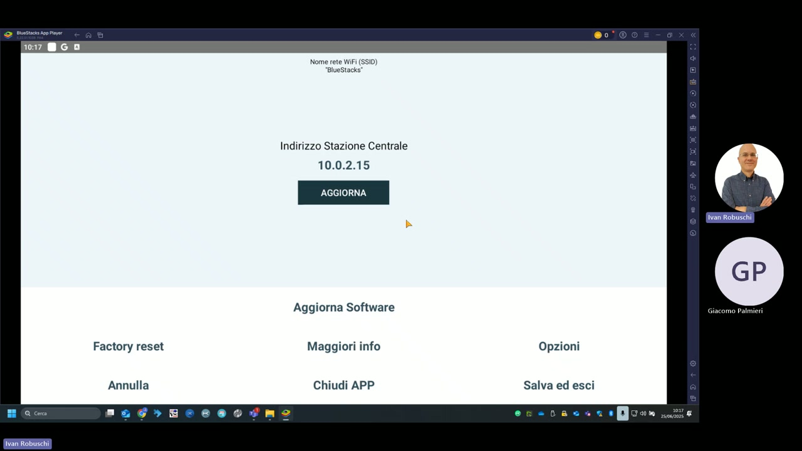
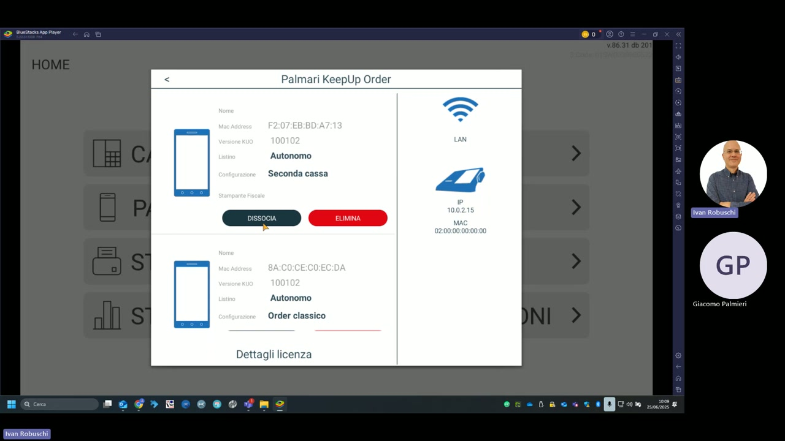
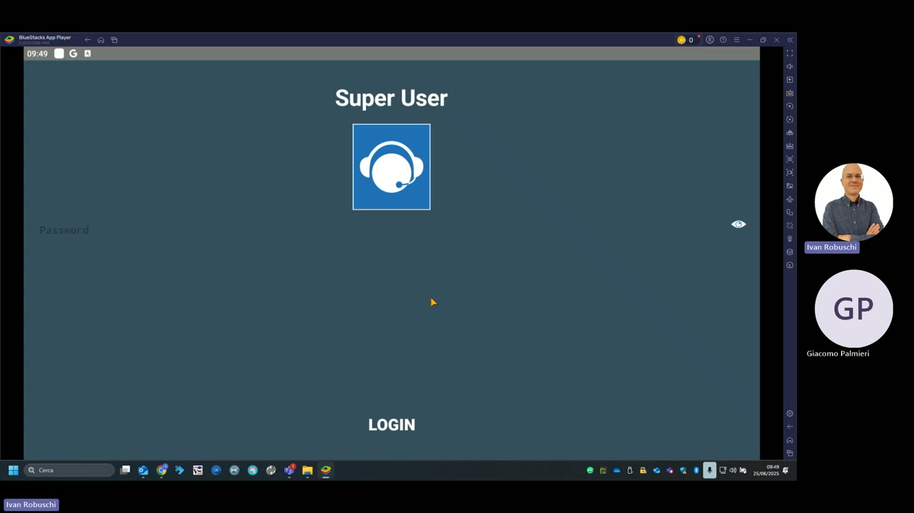

Configurazione palmari
Questa sezione descrive come configurare e abbinare i palmari KeepUp Order alla stazione centrale KeepUp Smart, impostare l'indirizzo IP e accedere alle opzioni avanzate tramite Super User.
Indirizzo IP stazione centrale

La schermata Informazioni (raggiungibile da HOME → Informazioni) mostra e consente di modificare l'indirizzo IP della stazione centrale.
| Campo | Valore demo |
|---|---|
| Indirizzo Stazione Centrale | 10.0.2.15 |
| Nome rete Wi-Fi (SSID) | BlueStacks |
Il tasto AGGIORNA salva il nuovo indirizzo inserito.
Opzioni aggiuntive
| Opzione | Descrizione |
|---|---|
| Aggiorna Software | Controlla e installa aggiornamenti dell'app KeepUp Order |
| Factory reset | Ripristina il palmare alle impostazioni di fabbrica (elimina tutti i dati) |
| Maggiori info | Mostra informazioni dettagliate sulla versione e i log di sistema |
| Opzioni | Accede ad ulteriori opzioni di configurazione |
| Chiudi APP | Chiude l'applicazione KeepUp Order |
| Salva ed esci | Salva l'indirizzo IP e chiude la schermata |
Palmari abbinati — gestione dalla cassa

Dalla stazione centrale KeepUp Smart è possibile vedere e gestire tutti i palmari abbinati. Per ogni dispositivo vengono mostrati:
| Campo | Palmare 1 | Palmare 2 |
|---|---|---|
| MAC Address | F2:07:EB:BD:A7:13 | 8A:C0:CE:C0:EC:DA |
| Versione KUO | 100102 | 100102 |
| Listino | Autonomo | Autonomo |
| Configurazione | Seconda cassa | Order classico |
| IP | 10.0.2.15 | — |
| MAC | 02:00:00:00:00:00 | — |
Azioni disponibili per ogni palmare
| Azione | Descrizione |
|---|---|
| DISSOCIA | Scollega il palmare dalla stazione (il dispositivo potrà essere riabbinato) |
| ELIMINA | Rimuove definitivamente il palmare dall'elenco |
| Dettagli licenza | Mostra le informazioni di licenza del dispositivo |
Configurazioni disponibili
| Configurazione | Descrizione |
|---|---|
| Order classico | Modalità palmare standard per presa comanda |
| Seconda cassa | Il palmare funziona come seconda cassa autonoma con stampante fiscale |
| Autonomo | Il palmare gestisce il proprio listino prezzi indipendentemente |
Accesso Super User

L'accesso Super User (raggiungibile da HOME → Super User) richiede una password e consente la configurazione avanzata del palmare, inclusi la gestione degli archivi locali e le impostazioni di rete.
Attenzione — Factory reset
Il Factory reset elimina tutti i dati locali del palmare (database articoli, configurazione, log). Usarlo solo in caso di problemi gravi e dopo aver sincronizzato i dati con la stazione centrale.
Abbinamento nuovo palmare
Per abbinare un nuovo palmare alla stazione centrale, avviare KeepUp Order sul nuovo dispositivo, inserire l'IP della stazione e premere AGGIORNA. Il dispositivo appare automaticamente nell'elenco palmari della cassa KeepUp Smart.